sns.violinplot()Discover the true shape of numerical data distributions by combining Kernel Density Estimation (KDE) with internal box plots, uncovering bimodal secrets, and mastering split violins.
"Section A aur Section B ke students ke marks ka median lagbhag similar hai (71.3 vs 72.4). Kya dono sections mein marks ka distribution bhi same hai?"
Agar aap sirf Mean aur Median dekhkar faisla le lenge, toh aapka answer hoga: "Haan, dono sections ki performance lagbhag barabar hai!" Lekin real-world data science mein yeh sabse bada dhokha ho sakta hai.
Jab aap unhi marks ka Violin Plot dekhenge, toh aapke hosh udd jayenge! Section A mein students ka score ek single concentrated cluster mein hai (lagbhag sabhi 68–75 ke beech hain). Lekin Section B mein classroom do tukdo mein polarized hai: 50% students struggle kar rahe hain 55 ke aas-paas (Peak 1), aur 50% top students 85 ke aas-paas hain (Peak 2)! Dono ka median same 72 hai, lekin dono classrooms ki teaching requirement 100% alag hai!
Ek Violin Plot do classical statistical charts ka perfect hybrid combination hota hai:
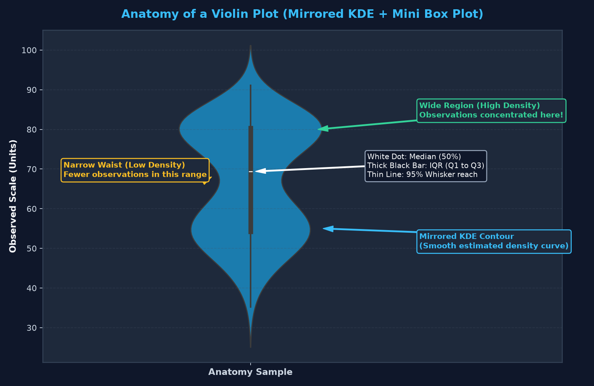
Violin plot ka sabse important rule yaad rakhiye: Violin ki horizontal width kisi value range ki Estimated Probability Density represent karti hai, exact observation count nahi!
Violin plot padhne se pehle students ko lagta hai ki yeh curved shape kahan se aayi. Iske peeche jo core statistical algorithm kaam karta hai use kehte hain Kernel Density Estimation (KDE).
Imagine kijiye aapke paas 9 students ke test marks hain: [22, 25, 27, 30, 31, 33, 48, 50, 52]. Agar aap har student ke score par ek ret ka chhota sa smooth dher (Gaussian bump / Kernel) rakh dein:
Jab in saare bumps ko mathematically add (sum) kar diya jaata hai, toh humein ek continuous smooth density curve milta hai. Phir Seaborn is curve ko dono taraf mirror kar deta hai, aur ban jaata hai aapka Violin Plot!
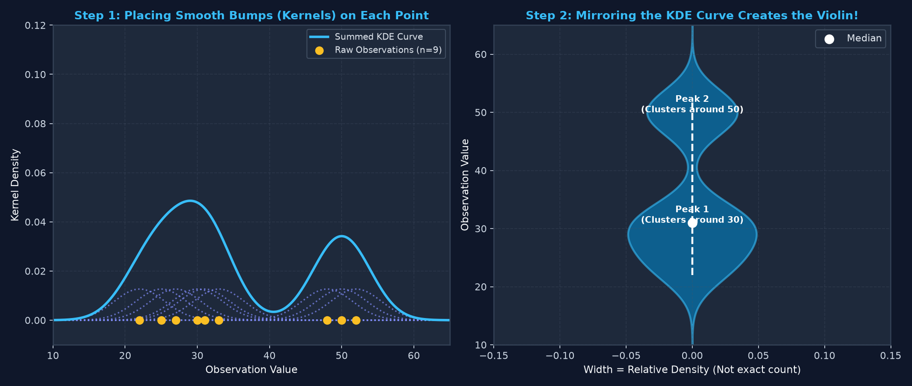
Real-life datasets mein aapko violin plots 4 primary shapes mein dikhenge:
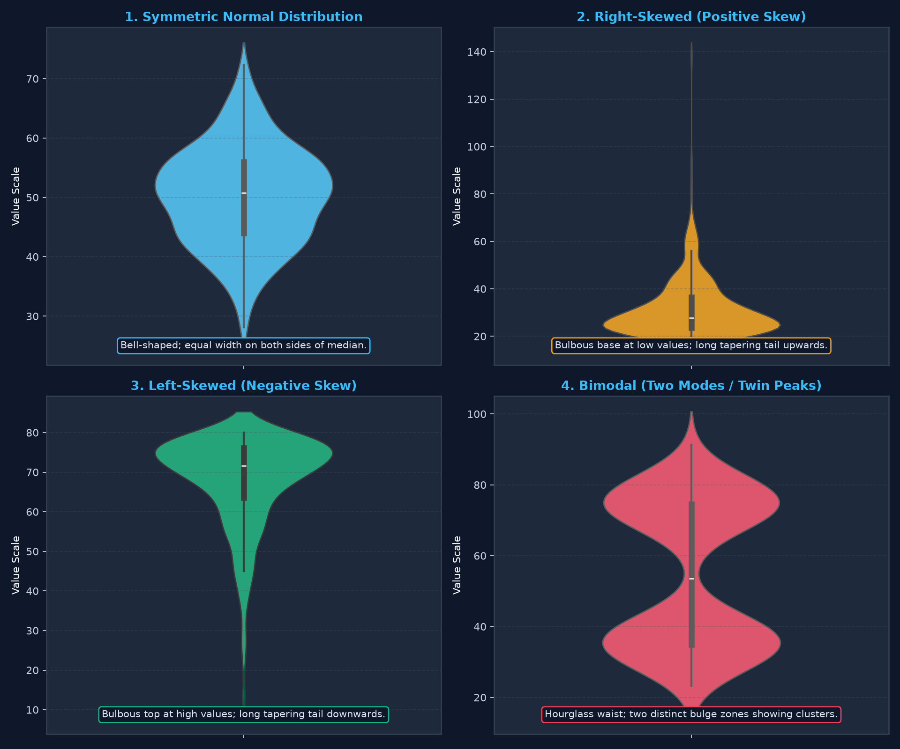
| Archetype | Visual Violin Anatomy | Statistical Meaning | Real-World Example |
|---|---|---|---|
| Symmetric Normal | Equal width on both sides of center; median sits in the exact middle bulge. | Mean ≈ Median; variance is evenly distributed without skew. | Calibrated factory machinery, adult heights, standardized IQ tests. |
| Right-Skewed (Positive) | Bulbous base at low values; long thin neck tapering upwards. | Mean > Median; majority values low, few extreme high outliers pull the tail. | Customer order spending, website API latencies, software engineer salaries. |
| Left-Skewed (Negative) | Bulbous top at high values; long thin stem tapering downwards. | Mean < Median; majority perform well, few severe failures pull the lower tail. | Easy college exam marks, airline on-time arrival scores, product satisfaction ratings. |
| Bimodal (Two Peaks) | Hourglass waist; two distinct wide bulges with a narrow bridge in between. | Data contains two distinct hidden sub-populations with different means! | Rush hour vs non-rush hour delivery times, mixed junior/senior developer salaries. |
Yeh teen terms beginner data scientists aksar aapas mein mix kar dete hain:
sns.violinplot() Syntax & Master Parameter GuideSeaborn mein violin plot generate karne ke liye standard function sns.violinplot() hota hai. Seaborn 0.13+ architecture mein is function ne kai legacy parameters ko modernize kiya hai (jaise scale ko density_norm se replace karna aur modern gap support add karna).
sns.violinplot(data=None, *, x=None, y=None, hue=None, order=None, hue_order=None, orient=None, color=None, palette=None, saturation=0.75, fill=True, inner='box', split=False, width=0.8, dodge='auto', gap=0, linewidth=None, linecolor='auto', cut=2, gridsize=100, bw_method='scott', bw_adjust=1, density_norm='area', common_norm=False, inner_kws=None, ax=None, **kwargs)
| Parameter | Type | Default | Data Science Purpose & Hinglish Explanation |
|---|---|---|---|
data |
DataFrame / Array | None |
Input dataset (Tidy long-form ya Wide-form tabular data). |
x, y |
str / Series | None |
Variables mapping. Agar categorical variable x par hai toh vertical plot banega; agar y par hai toh horizontal. |
hue |
str | None |
Sub-grouping variable jo violins ko subgroups mein divide ya split karta hai. |
inner |
'box' | 'quart' | 'point' | 'stick' | None | 'box' |
Violin ke center spine par internal indicators draw karta hai: miniature box plot, dashed quartile lines, individual points, ya clean blank. |
split |
bool | False |
Game-Changer: Jab hue mein exactly 2 levels hote hain, toh split=True unhe ek single violin ke left aur right halves mein merge kar deta hai! |
density_norm |
'area' | 'count' | 'width' | 'area' |
Seaborn 0.13+ standard (replaces deprecated scale). Controls how violin widths are scaled across groups. |
bw_adjust |
float | 1.0 |
Bandwidth multiplier factor. < 1.0 under-smooths (shows fine peaks); > 1.0 over-smooths. |
cut |
float | 2.0 |
KDE curve ko observed min/max ke kitne bandwidth units aage tak extrapolate karna hai. Set cut=0 to strictly stop at data bounds. |
gap |
float | 0 |
Seaborn 0.13+ feature: hue violins ke beech ka visual space (e.g. gap=0.08). |
common_norm |
bool | False |
Agar True ho, toh saare violins ki density ko globally normalize kiya jaata hai. |
Aaiye student exam performance ka basic violin plot draw karke center median aur quartile boundaries dekhte hain:
import matplotlib.pyplot as plt
import seaborn as sns
import pandas as pd
df_college = pd.read_csv("scratch/seaborn_topic8_data/college_exam_multimodal.csv")
fig, ax = plt.subplots(figsize=(7, 6))
sns.violinplot(y=df_college['exam_marks'], ax=ax, color='#0284c7', inner='box', cut=2, width=0.4)
med_m = df_college['exam_marks'].median()
ax.set_ylabel("Exam Marks (Out of 100)", fontsize=11, fontweight='bold')
ax.set_title("Distribution of Student Exam Marks (n=300)", fontsize=13, fontweight='bold')
ax.set_xticks([0])
ax.set_xticklabels(["College Cohort"])
plt.tight_layout()
plt.show()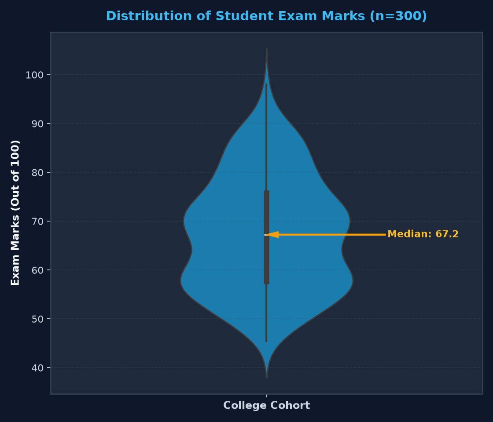
Horizontal layout banakar 45-minute guaranteed SLA threshold ke saath delivery latency check karte hain:
df_deliv = pd.read_csv("scratch/seaborn_topic8_data/ecommerce_deliveries_shifts.csv")
fig, ax = plt.subplots(figsize=(10, 5))
sns.violinplot(x=df_deliv['delivery_time_mins'], ax=ax, color='#6366f1', inner='box', cut=2, width=0.45)
ax.axvline(45.0, color='#ef4444', linestyle='--', linewidth=2, label='45m Guaranteed SLA')
ax.set_xlabel("Delivery Time (minutes)", fontsize=11, fontweight='bold')
ax.set_title("E-Commerce Order Delivery Times (n=360)", fontsize=13, fontweight='bold')
ax.legend()
plt.tight_layout()
plt.show()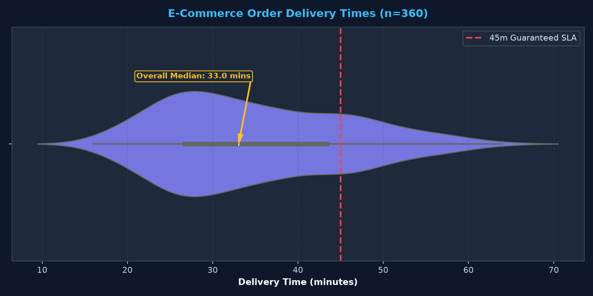
Violin plot dekhne mein khoobsurat lagta hai, lekin ek professional data analyst ki nazar uske geometry mein छिपे statistical signals ko dhundti hai. Yahan 4 critical components diye gaye hain:
Violin plot ki width relative probability density batati hai, exact student count nahi! Agar Section A mein 1,000 students hain aur Section B mein sirf 50 students hain, default setting (density_norm='area') mein dono violins ki total width barabar dikhegi kyunki har violin ka area 1.0 par normalize hota hai. Kabhi yeh mat samajhiye ki chouda violin matlab zyada data points!
bw_adjust) & The cut ParameterViolin plot ka sabse sensitive hissa hota hai Bandwidth Smoothing. KDE curve kitna smooth hoga, yeh bandwidth parameter decide karta hai. Seaborn 0.13+ mein hum ise bw_adjust parameter ke zariye fine-tune karte hain.
bw_adjust Parameter (Smoothing Multiplier)bw_adjust=1.0 (Default): Balanced automatic Scott's rule bandwidth.bw_adjust < 1.0 (e.g. 0.35): Under-smoothed. Bumps bohot patle ho jaate hain jisse random sampling noise bhi artificial peaks ke roop mein appear ho sakti hai.bw_adjust > 1.0 (e.g. 2.5): Over-smoothed. Excessive smoothing do genuine peaks ke beech ke dip ko mita deti hai, making bimodal data falsely appear unimodal!sec_b = df_college[df_college['section'] == 'Section B']['exam_marks']
fig, (ax1, ax2, ax3) = plt.subplots(1, 3, figsize=(15, 5))
# 1. Under-smoothed
sns.violinplot(y=sec_b, ax=ax1, color='#38bdf8', bw_adjust=0.35)
ax1.set_title("bw_adjust = 0.35 (Under-Smoothed)
Noisy & Distracting Jaggies")
# 2. Balanced
sns.violinplot(y=sec_b, ax=ax2, color='#10b981', bw_adjust=1.0)
ax2.set_title("bw_adjust = 1.0 (Balanced Default)
Accurately reveals both modes (55 & 85)")
# 3. Over-smoothed
sns.violinplot(y=sec_b, ax=ax3, color='#f43f5e', bw_adjust=2.5)
ax3.set_title("bw_adjust = 2.5 (Over-Smoothed)
Masks the dip; falsely appears unimodal!")
plt.tight_layout()
plt.show()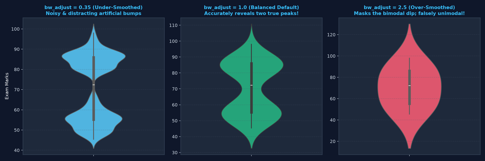
cut Parameter: Bounded Variables AlertBy default, Seaborn ka cut=2 setting KDE tails ko extreme observed values ke 2 bandwidth units aage tak extend kar deta hai. Iska side-effect yeh hota hai ki agar exam marks 0 se 100 ke beech hain, toh violin −5 ya +105 tak reach karta hua dikhayi de sakta hai!
Exam marks, ages, ya positive delivery times jaise physical variables ke liye KDE tails impossible negative values ya >100% values dikha sakti hain. Is problem ka clean solution hai: cut=0 set karein! Yeh violin ko strictly dataset ke observed minimum aur maximum par terminate kar deta hai.
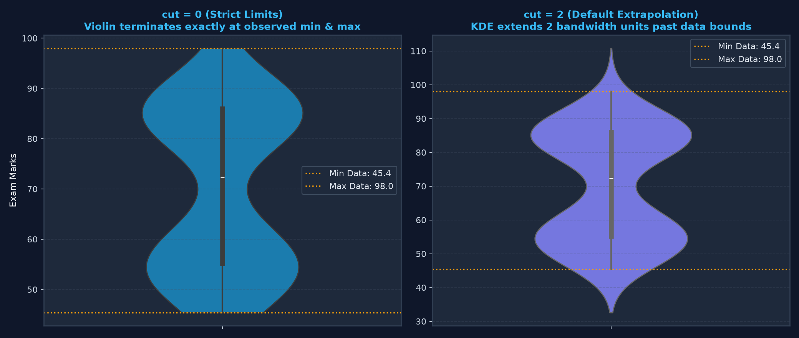
cut Parameter — cut=0 strictly binds the violin within observed data limits, whereas cut=2 extrapolates smooth tails past actual min/max boundaries.Professional dashboards aur client reports ke liye default violin plots ko customize karna zaroori hota hai. Yahan do major customization techniques di gayi hain: Orientation Control aur Inner Indicator Selection.
Jab aapke categories ke naam lambe hote hain (jaise customer membership tiers: "Regular Member", "Gold Tier", "VIP Corporate"), toh horizontal violin plot banana best practice hai:
import matplotlib.pyplot as plt
import seaborn as sns
import pandas as pd
df_spend = pd.read_csv("scratch/seaborn_topic8_data/customer_spending_tiers.csv")
fig, (ax1, ax2) = plt.subplots(1, 2, figsize=(13, 5.5))
# Vertical plot
sns.violinplot(data=df_spend, x='tier', y='spend_inr', hue='tier', legend=False,
ax=ax1, palette=['#0284c7', '#6366f1', '#f43f5e'], width=0.55)
ax1.set_title("Vertical Violin Plot (X = Category)")
ax1.yaxis.set_major_formatter('₹{x:,.0f}')
# Horizontal plot (natural readability)
sns.violinplot(data=df_spend, y='tier', x='spend_inr', hue='tier', legend=False,
ax=ax2, palette=['#0284c7', '#6366f1', '#f43f5e'], width=0.55)
ax2.set_title("Horizontal Violin Plot (Y = Category)")
ax2.xaxis.set_major_formatter('₹{x:,.0f}')
plt.tight_layout()
plt.show()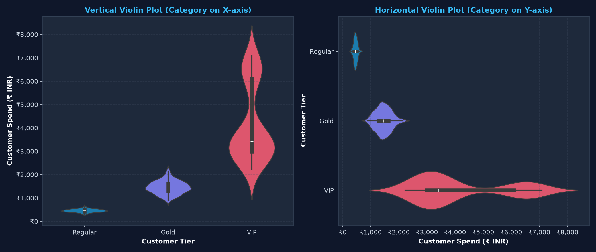
inner ParameterViolin plot ke center spine par kya draw hoga, yeh inner parameter decide karta hai:
inner='box' (Default): Miniature box plot with white median dot and thick IQR bar.inner='quart': Three dashed lines representing Q1 (25%), Median (50%), and Q3 (75%). Bohot clean aur modern look deta hai!inner='point': Saare individual raw observations ko scatter dots ke roop mein center spine par plot karta hai. Small datasets ke liye ideal.inner=None: Koi internal lines ya box nahi hote; violin hollow dikhta hai, focusing purely on continuous density shape.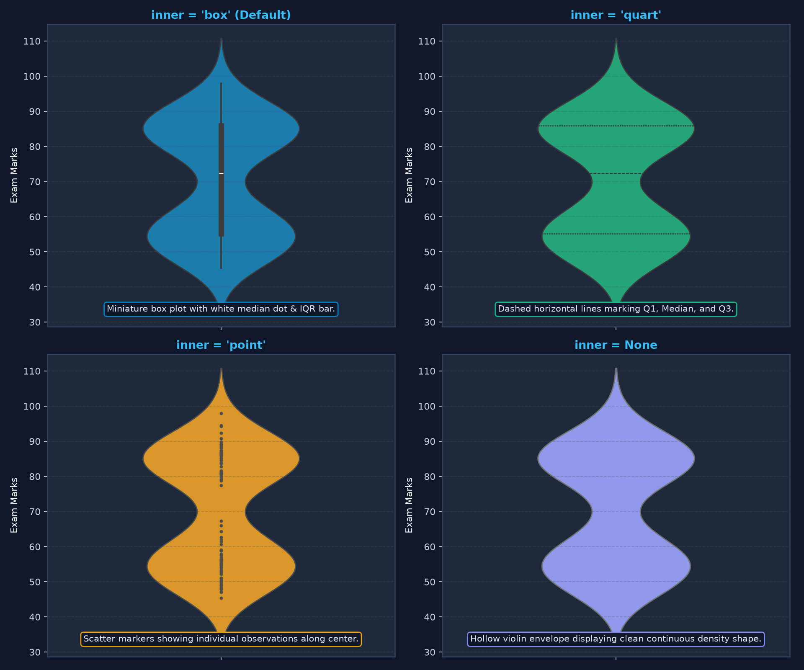
inner modes — 'box' (default) vs 'quart' (dashed lines) vs 'point' (scatter dots) vs None (pure density envelope).hue & Modern gapMulti-category segmentation violin plots ki sabse badi strength hai. Hum multiple groups ko side-by-side compare kar sakte hain aur hue variable ke zariye sub-cohorts mein drill-down kar sakte hain.
Aaiye teen academic sections ko compare karte hain jahan Section A aur B ka median lagbhag same hai, lekin distribution bilkul alag hai:
df_college = pd.read_csv("scratch/seaborn_topic8_data/college_exam_multimodal.csv")
fig, ax = plt.subplots(figsize=(11, 6))
sec_pal = {'Section A': '#10b981', 'Section B': '#38bdf8', 'Section C': '#f59e0b'}
sns.violinplot(data=df_college, x='section', y='exam_marks', hue='section', legend=False,
palette=sec_pal, ax=ax, width=0.55, inner='box')
ax.set_title("Performance Analysis Across College Sections: Unimodal vs Bimodal vs Skewed")
ax.set_xlabel("Academic Section")
ax.set_ylabel("Final Exam Marks")
plt.tight_layout()
plt.show()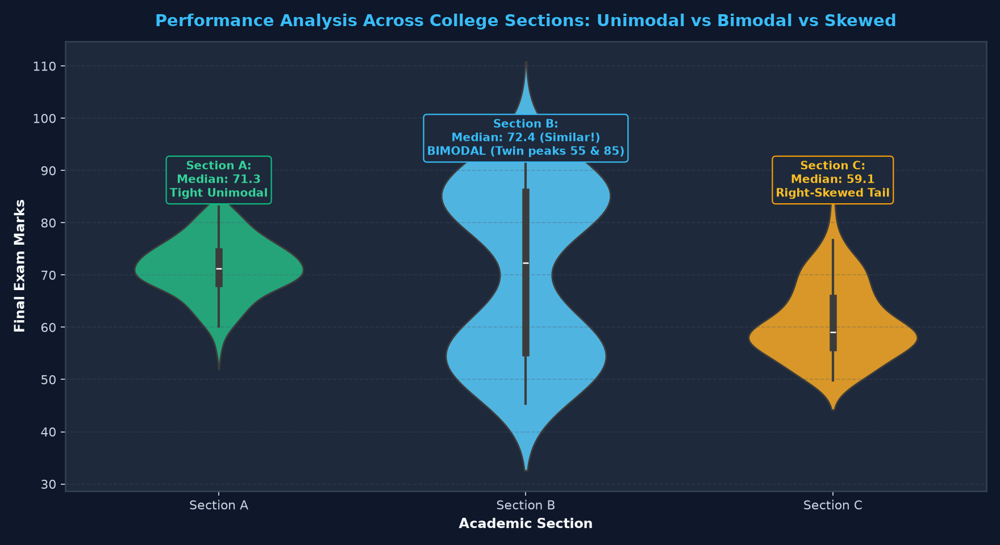
hue and gapSeaborn 0.13+ mein gap=0.08 use karke dodged sub-violins ke beech clean professional breathing room add kiya jaata hai:
df_deliv = pd.read_csv("scratch/seaborn_topic8_data/ecommerce_deliveries_shifts.csv")
fig, ax = plt.subplots(figsize=(11, 5.5))
sns.violinplot(data=df_deliv, x='partner', y='delivery_time_mins', hue='meal_type',
palette=['#38bdf8', '#fbbf24'], ax=ax, width=0.6, gap=0.08, inner='quart')
ax.axhline(45, color='#ef4444', linestyle='--', linewidth=1.8, label='45m Guaranteed SLA')
ax.set_title("Delivery Times by Fleet and Meal Slot (Using hue='meal_type' with gap=0.08)")
ax.legend(title='Meal Slot')
plt.tight_layout()
plt.show()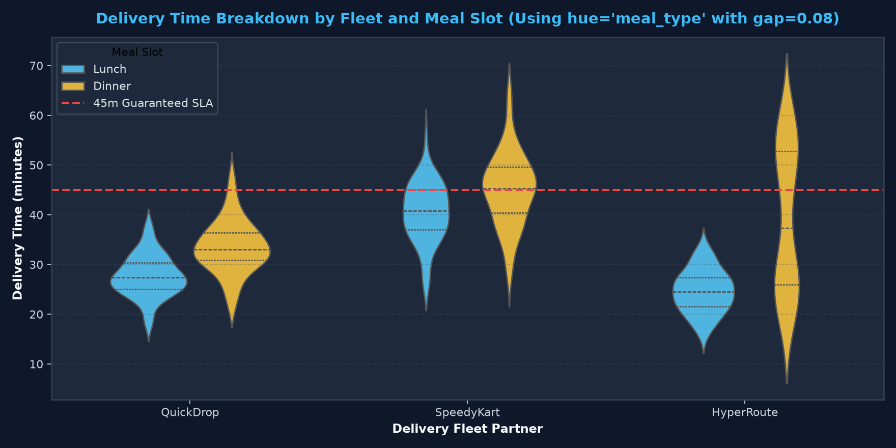
gap=0.08 — Delivery partners broken down by Lunch vs Dinner meal slots with dashed quartile indicators.split=True)Agar aapke hue variable mein exactly 2 categories hain (jaise Lunch vs Dinner, Male vs Female, Treatment vs Control), toh do alag-alag violins draw karne ki bajaye Seaborn unhe ek hi violin ke Left Half aur Right Half mein split kar sakta hai!
fig, ax = plt.subplots(figsize=(11, 5.5))
# split=True requires exactly 2 hue levels
sns.violinplot(data=df_deliv, x='partner', y='delivery_time_mins', hue='meal_type',
split=True, palette=['#38bdf8', '#f59e0b'], ax=ax, width=0.55, inner='quart')
ax.axhline(45, color='#ef4444', linestyle=':', linewidth=2, label='45m SLA Target')
ax.set_title("Split Violin Plot: Direct Half-to-Half Comparison (Lunch vs Dinner)")
ax.legend(title='Meal Slot (Left=Lunch, Right=Dinner)', loc='upper left')
plt.tight_layout()
plt.show()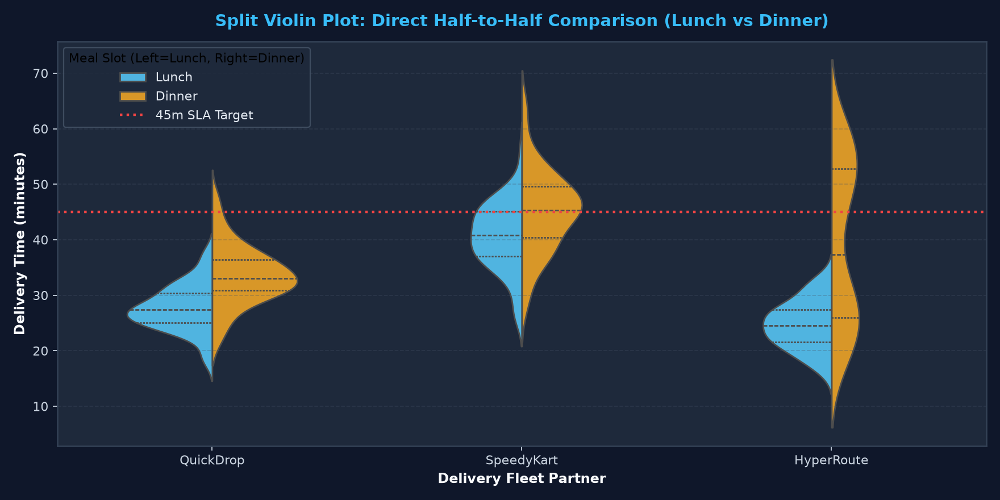
Aaiye student exam performance mein Male vs Female distributions ko academic sections ke andar split karke compare karte hain:
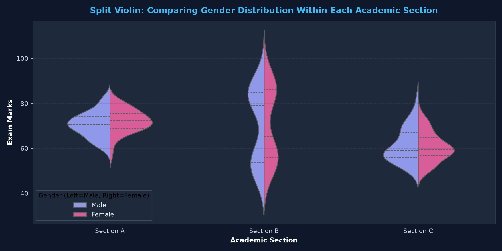
Seaborn ValueError: split=True can only be used with a hue variable that has exactly two levels! throw kar dega. Ek violin sirf do sides (Left and Right) afford kar sakta hai. Agar 3 levels hain (e.g. Morning, Afternoon, Evening), toh standard grouped violins (split=False) use karein.
Topic 7 mein humne Box Plots padhe the. Box plots 5-number summary (Min, Q1, Median, Q3, Max) ke liye best hote hain, lekin unki sabse badi kamzori yeh hai ki woh multimodality ko completely mita dete hain.
Agar aap Section B ke marks ka Box Plot banayenge, toh aapko ek wide box dikhega jiska median center mein 72.4 par baitha hoga. Box plot ko dekhkar koi bhi insaan yeh nahi bata sakta ki 70 par koi student hi nahi hai — wahan ek khali dip hai! Lekin Violin Plot dekhte hi hourglass waist aur dono modes (55 aur 85) instantly clear ho jaate hain.
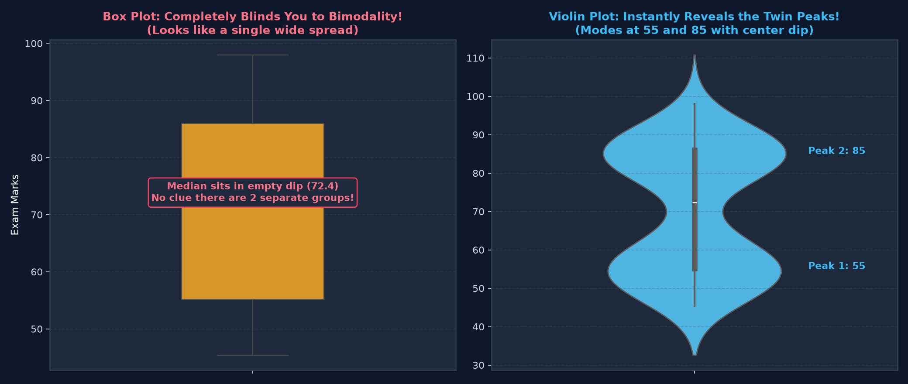
| Analytical Requirement | Box Plot (sns.boxplot) |
Violin Plot (sns.violinplot) |
|---|---|---|
| Revealing Multimodal Peaks | Fails completely (masks dips and modes). | Winner! Hourglass bulges expose clusters clearly. |
| Compact Group Comparison (15+ categories) | Winner! Clean, narrow rectangular boxes. | Can become crowded and visually heavy. |
| Outlier Detection via Tukey Fences | Winner! Explicit flier dots beyond 1.5×IQR. | Shows smooth tapering tails (no explicit fence markers). |
| Small Datasets (N < 30) | Winner! Quantiles are stable and safe. | KDE may create false artificial bumps! |
| Executive Audience Familiarity | Winner! Universally understood by managers. | Requires a 30-second explanation of width = density. |
Histograms aur KDE curves distribution ke shape ko x-axis par count ya vertical density ke roop mein show karte hain. Violin Plot usi KDE curve ko 90° rotate karke horizontally mirror kar deta hai:
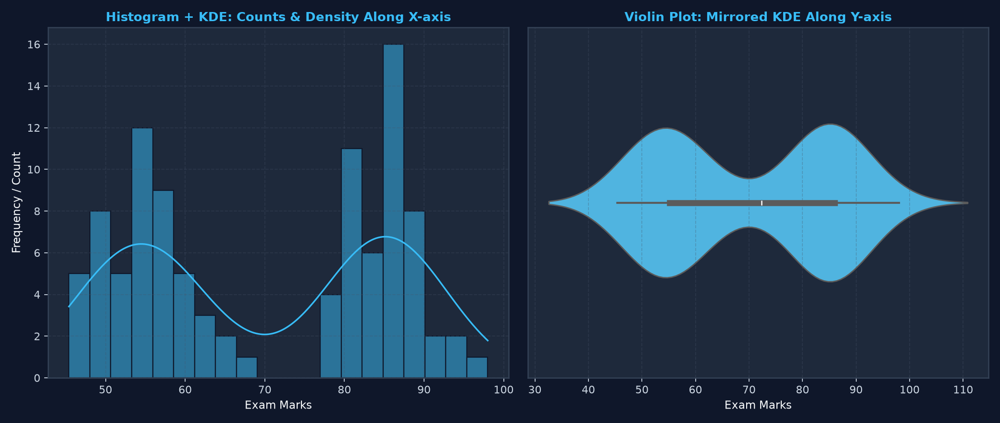
sns.histplot) jab aapko single variable ka exact bin counts aur probability curve dekhna ho.sns.violinplot) jab aapko 3 se 8 categories ke distributions ko side-by-side compare karna ho bina kisi visual clutter ke.Topic 6 mein humne Empirical Cumulative Distribution Functions (ECDF) padhe the. ECDF aur Violin plots ek doosre ke perfect complementary partners hote hain:
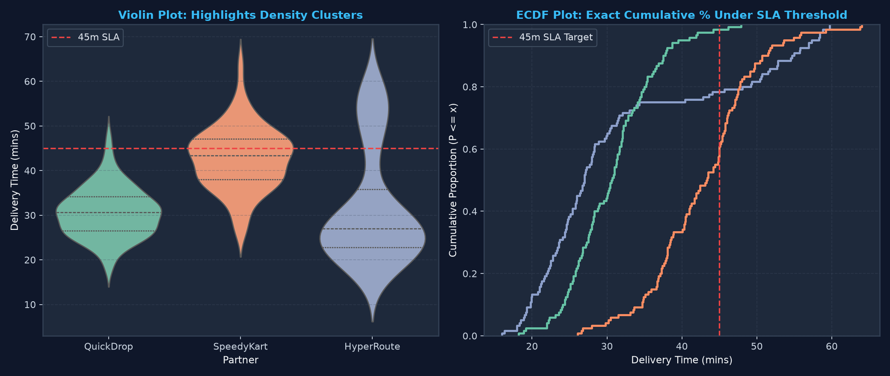
Jab aapke dataset mein observations kam hoti hain (N < 30), toh KDE smoothing par blindly trust karna dangerous ho sakta hai. KDE chhota sample hone par bhi ek smooth elegant curve draw kar deta hai, jisse misleading illusion create hota hai.
Hollow violin (inner=None) ke upar ek jittered sns.stripplot(alpha=0.6) overlay karein. Isse students aur stakeholders ko summary shape bhi milta hai aur underlying data points ki exact sample strength bhi transparently dikhti hai!
import matplotlib.pyplot as plt
import seaborn as sns
import pandas as pd
df = pd.read_csv("scratch/seaborn_topic8_data/college_exam_multimodal.csv")
fig, ax = plt.subplots(figsize=(10, 5.5))
# 1. Base hollow violin
sns.violinplot(data=df, x='section', y='exam_marks', ax=ax,
palette=['#1e293b', '#1e293b', '#1e293b'],
linewidth=1.5, linecolor='#64748b', inner=None)
# 2. Overlay jittered points
sns.stripplot(data=df, x='section', y='exam_marks', ax=ax,
palette=['#34d399', '#38bdf8', '#fbbf24'],
jitter=0.25, size=5, alpha=0.6, edgecolor='#0f172a', linewidth=0.5)
ax.set_title("Violin Plot Overlaid with Strip Plot (Density + Raw Sample Transparency)")
plt.tight_layout()
plt.show()Professional reports ke liye chart formatting bohot zaroori hai:
sns.despine(top=True, right=True).ax.yaxis.set_major_formatter('₹{x:,.0f}')) apply karein.ax.axhline(linestyle='--', linewidth=1.8) ke zariye prominently highlight karein."College administration report karti hai ki Section A aur Section B dono ka median score ≈ 71–72 marks hai. Lekin faculty complaint kar rahi hai ki Section B mein padhana mushkil ho raha hai. Kya violin plot se hidden distribution difference reveal ho sakta hai?"
Synthetic demonstration dataset containing 300 students (100 in Section A, 100 in Section B, 100 in Section C) with attributes: student_id, section, gender, and exam_marks (out of 100). (Dataset generated reproducibly via NumPy with seed 42).
import matplotlib.pyplot as plt
import seaborn as sns
import pandas as pd
df = pd.read_csv("scratch/seaborn_topic8_data/college_exam_multimodal.csv")
fig, ax = plt.subplots(figsize=(11, 6))
palette = {'Section A': '#10b981', 'Section B': '#38bdf8', 'Section C': '#f59e0b'}
sns.violinplot(data=df, x='section', y='exam_marks', hue='section', legend=False,
palette=palette, ax=ax, width=0.55, inner='box')
ax.set_title("Performance Analysis Across College Sections (Unimodal vs Bimodal vs Skewed)")
ax.set_ylabel("Final Exam Marks (Out of 100)")
ax.set_xlabel("Academic Section")
plt.tight_layout()
plt.show()Refer to Figure 8.10 (Section 7: College Sections Multimodal Violin) for the visual chart: Section A exhibits a tight unimodal bell curve (IQR = 6.07), while Section B exhibits the classic bimodal hourglass with twin modes at 55 and 85.
Violin plot dekhte hi ground reality crystal clear ho jaati hai! Section A mein students homogeneous hain (tight IQR = 6.07). Lekin Section B ka violin ek hourglass shape banata hai jisme 55 marks par ek bada bulge hai aur 85 marks par doosra bulge hai! Center mein (70–75) density bohot kam hai. Faculty ko ek classroom mein do alag-alag tracks chalane pad rahe hain, jise ek standard box plot ya median kabhi reveal nahi kar sakta tha!
Violin plot distribution ki shape toh bata deta hai, lekin yeh nahi batata ki Section B ke kaunse specific students kis track se belong karte hain. Next step: attendance, assignment submission history, aur pre-requisite quiz scores ke saath correlation check karein.
"E-commerce logistics head dekhna chahte hain ki 3 delivery partners (QuickDrop, SpeedyKart, HyperRoute) ka delivery latency lunch aur dinner shifts mein kaisa behave karta hai, aur kya koi fleet dinner time par highway traffic bottleneck face karti hai?"
Synthetic demonstration dataset containing 360 food delivery orders across 3 fleet partners, segmented into Lunch (60 orders) and Dinner (60 orders) with guaranteed 45m SLA benchmark.
import matplotlib.pyplot as plt
import seaborn as sns
import pandas as pd
df_deliv = pd.read_csv("scratch/seaborn_topic8_data/ecommerce_deliveries_shifts.csv")
fig, ax = plt.subplots(figsize=(11, 5.5))
sns.violinplot(data=df_deliv, x='partner', y='delivery_time_mins', hue='meal_type',
split=True, palette=['#38bdf8', '#f59e0b'], ax=ax, width=0.55, inner='quart')
ax.axhline(45, color='#ef4444', linestyle=':', linewidth=2, label='45m Guaranteed SLA')
ax.set_title("Split Violin Plot: Direct Half-to-Half Comparison (Lunch vs Dinner)")
ax.legend(title='Meal Slot (Left=Lunch, Right=Dinner)', loc='upper left')
plt.tight_layout()
plt.show()Refer to Figure 8.12 (Section 8: Split Violin Plot: Lunch vs Dinner) for the visual chart: Left half (Lunch) shows fast, predictable delivery times, while HyperRoute's right half (Dinner) splits into two distinct modes due to bridge detour bottlenecks.
FinTech analytics team ne 300 customers ka spending audit kiya across Regular, Gold, aur VIP tiers. Regular tier ka median ₹455 hai with tight variance; Gold tier ka median ₹1,435 hai; VIP tier ka median ₹3,420 hai lekin mean ₹4,157 tak chala jaata hai kyunki violin ka upper neck ₹8,500 tak stretch hota hai (luxury purchases).
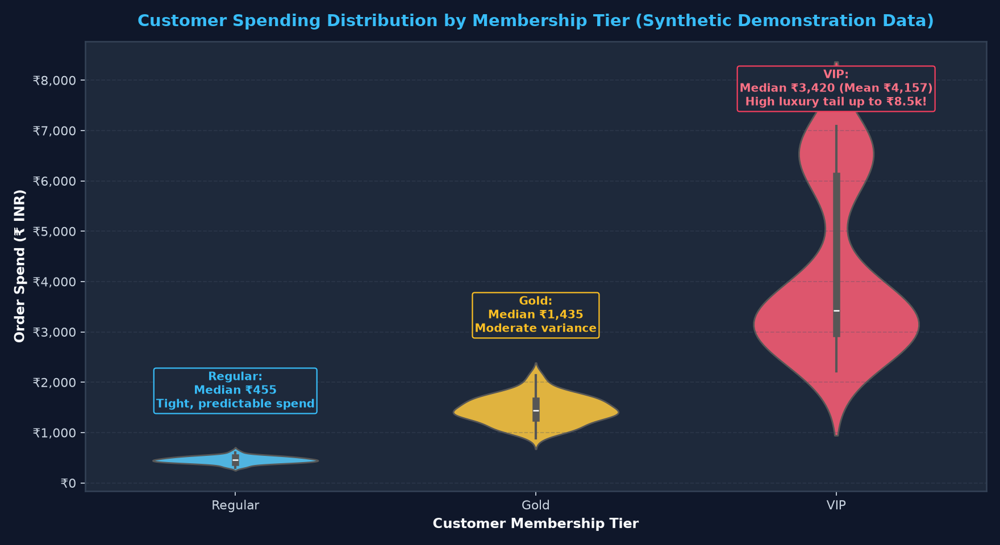
Cloud SRE team ne 300 user profile requests ka latency audit kiya. Cache-Hit requests ek single tight peak (~18ms) par execute hoti hain, jabki Cache-Miss requests bimodal clusters dikhati hain (database read at ~140ms aur network timeout recovery at ~260ms), breaching both the 50ms and 100ms SLAs!
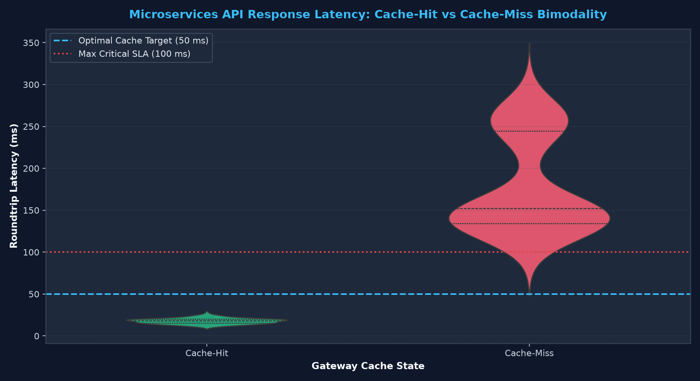
Industrial manufacturing plant mein 4 high-speed motors ke vibration frequencies monitor kiye gaye. Motor C mein do peaks dikhayi dete hain (44 Hz aur 68 Hz), jo dangerous Harmonic Resonance ko flag karte hain!
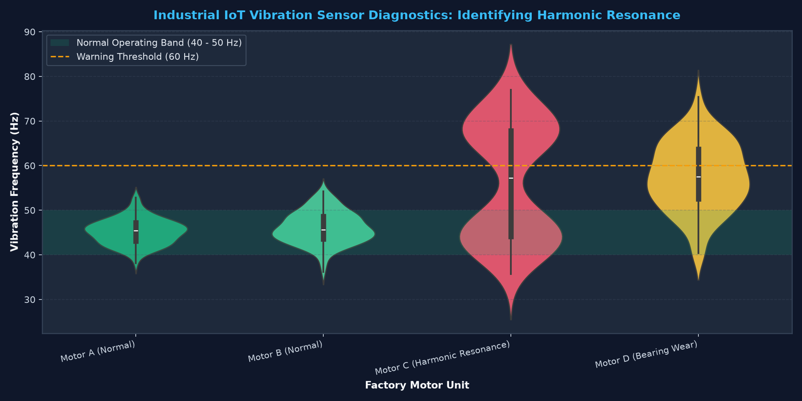
Violin plots interpret karte waqt data scientists aur students aksar fatal mistakes karte hain. Yahan 12 most frequent pitfalls aur unka verified resolution guide diya gaya hai:
| # | Pitfall & Silent Bug Scenario | Danger / Incorrect Statistical Interpretation | The Correct Code & Mental Fix |
|---|---|---|---|
| 1 | Assuming Width Equals Observation Count | Believing a wider violin means more data points collected. | Width represents relative probability density, not count. A group with N=20 can have the same width as N=2,000! |
| 2 | Treating Every Small Bump as a Sub-population | Over-interpreting random sampling noise as distinct customer clusters. | Check sample size. If N < 50, increase bw_adjust=1.2 or overlay sns.stripplot to verify sample support. |
| 3 | Ignoring cut on Bounded Variables |
Exam marks showing negative percentages (−5%) or ages reaching 130! | Pass cut=0 to strictly terminate the violin tails at observed data min and max bounds. |
| 4 | Passing 3+ Hue Levels to split=True |
Code crashes with ValueError: split=True can only be used with a hue variable that has exactly two levels. |
Split violins only have left and right halves. If you have 3+ categories, set split=False. |
| 5 | Over-smoothing Bimodal Data with High Bandwidth | Setting bw_adjust=2.5 masks true bimodal twin peaks into a fake bell curve. |
Keep bw_adjust=1.0 as default. Only adjust slightly (0.8 to 1.2) after verifying with a histogram. |
| 6 | Using Obsolete Parameter scale Instead of density_norm |
Getting deprecation warnings in Seaborn 0.13+: FutureWarning: The `scale` parameter is deprecated. Use `density_norm` instead. |
Use modern Seaborn 0.13 syntax: density_norm='area', 'count', or 'width'. |
| 7 | Using Obsolete Parameter bw Instead of bw_adjust |
Deprecation warning or broken custom bandwidth scaling. | Pass bw_adjust=1.0 for relative multiplier or bw_method='scott' for calculation rule. |
| 8 | Passing palette Without hue in Seaborn 0.13+ |
Getting FutureWarning: Passing palette without assigning hue is deprecated. |
Pass hue=category_col, legend=False when applying custom categorical palettes. |
| 9 | Assuming Outlier Flags Exist in Violin Plots | Searching for individual outlier dots that are visible in box plots. | Default violins show continuous tapering tails, not isolated fliers. Use inner='point' or overlay sns.stripplot. |
| 10 | Comparing Groups with Incompatible Scale Units | Plotting salary in INR next to salary in USD without currency normalization. | Always normalize currencies and scales into identical units before feeding into a single axes. |
| 11 | Overlapping Grouped Hue Violins | Adjacent hue violins look crowded and visually collide. | Use Seaborn 0.13+ gap=0.08 to introduce clean modern spacing between sub-category violins. |
| 12 | Treating Synthetic Demonstration Data as Real Measurements | Publishing algorithmic case study findings as genuine corporate statistics. | Always clearly label synthetic datasets as demonstration examples with explicit random seeds. |
Aapke daily production work aur interviews ke liye complete copy-paste code cheat sheet:
| Analytical Goal | Modern Seaborn 0.13+ Code Snippet |
|---|---|
| Standard Vertical Violin | sns.violinplot(data=df, x='category', y='value', palette='Set2') |
| Horizontal Violin (Long Labels) | sns.violinplot(data=df, y='category', x='value', palette='deep') |
| Split Violin (Binary Groups) | sns.violinplot(data=df, x='dept', y='salary', hue='gender', split=True) |
| Dashed Quartile Lines (No Box) | sns.violinplot(..., inner='quart') |
| Individual Data Points on Spine | sns.violinplot(..., inner='point') |
| Hollow Clean Density Envelope | sns.violinplot(..., inner=None) |
| Strict Data Bounds (No negative tails) | sns.violinplot(..., cut=0) |
| Fine-Tune Smoothing Bandwidth | sns.violinplot(..., bw_adjust=0.8) |
| Modern Spacing Between Hue Violins | sns.violinplot(..., hue='subgroup', gap=0.08) |
| Violin + Strip Plot Overlay | sns.violinplot(..., inner=None); sns.stripplot(..., alpha=0.6, jitter=0.2) |
Apni understanding ko test karne ke liye niche diye gaye 21 curated questions solve kijiye (10 MCQs, 5 Graph Interpretation, 3 Coding Exercises, 2 Output Prediction + 1 Complete Mini-Project).
A) Total number of observations collected
B) Estimated relative probability density at that value
C) The standard deviation of the category
D) The sample variance
Answer: B. Violin width indicates estimated relative probability density according to KDE, not absolute observation count.
A) Arithmetic Mean
B) Median (50th percentile)
C) Mode
D) Standard Error
Answer: B. The central white marker inside inner='box' represents the median.
A) Standard Box Plot
B) Violin Plot
C) Bar Plot with mean
D) Pie Chart
Answer: B. Box plots hide bimodality in a single wide box, while Violin plots clearly show the hourglass shape with twin bulges.
split=True parameter use karne ke liye hue variable mein kitne levels hone chahiye?A) Exactly 1
B) Exactly 2
C) 3 or more
D) Any number of levels
Answer: B. split=True merges two groups into left and right halves of a single violin; it requires exactly 2 hue levels.
A) cut=0
B) limit=True
C) clip=True
D) bound=0
Answer: A. Setting cut=0 terminates the KDE curve strictly at observed minimum and maximum data values.
A) bw_adjust=2.0
B) smooth=2.0
C) bandwidth=2.0
D) kernel_size=2.0
Answer: A. In Seaborn 0.13+, bw_adjust acts as the multiplicative factor for KDE bandwidth.
scale parameter ko kis parameter se replace kiya gaya hai?A) size_norm
B) density_norm
C) width_scale
D) area_norm
Answer: B. density_norm ('area', 'count', 'width') is the modern replacement for scale.
A) inner='quart'
B) inner='lines'
C) inner='dashed'
D) inner='percentile'
Answer: A. inner='quart' draws clean dashed horizontal lines for Q1, Median, and Q3.
A) Code runtime error throw kar deta hai
B) KDE curve artificial noisy peaks create kar sakta hai jo population mein exist nahi karti
C) Violin plot automatically box plot ban jaata hai
D) Medians calculate nahi ho paate
Answer: B. KDE estimates can be misleading on small samples. Always overlay strip plots when N is small.
A) spacing=0.1
B) pad=0.1
C) gap=0.08
D) margin=0.08
Answer: C. gap adds proportional spacing between dodged hue elements in Seaborn 0.13+.
Answer: Right-Skewed (Positive Skew). Majority observations low values par cluster karti hain, aur higher values ki taraf ek long tapering tail stretch hoti hai (e.g. customer spending, server latency).
Answer: Section B bimodal hai! Isme do distinct cohorts hain: ek group 55 marks par fail ho raha hai aur doosra group 85 marks par excel kar raha hai. Median sirf dono ke beech ke empty dip par baitha hua hai.
Answer: HyperRoute ke orders do alag routes par dispatch ho rahe hain: direct local deliveries 25 mins mein poori ho rahi hain, jabki bridge/highway detour orders 55 mins mein stuck ho rahe hain.
Answer: Nahi! Yeh default cut=2 KDE smoothing extrapolation ka artifact hai. Actual max marks 100 hi hain. Is visual bug ko fix karne ke liye cut=0 set karein.
Answer: Dinner shift mein overall delivery time consistently badh jaata hai (typical delivery latency shifts higher during dinner hours).
Solution:
import matplotlib.pyplot as plt
import seaborn as sns
import pandas as pd
df = pd.read_csv("scratch/seaborn_topic8_data/ecommerce_deliveries_shifts.csv")
fig, ax = plt.subplots(figsize=(10, 5))
sns.violinplot(data=df, y='partner', x='delivery_time_mins', hue='meal_type',
split=True, palette='Set2', inner='quart', cut=0, ax=ax)
ax.set_title("Horizontal Split Violin Plot: Lunch vs Dinner")
plt.tight_layout()
plt.show()Solution:
# 1. Base hollow violin
sns.violinplot(data=df, x='category', y='value', inner=None, palette='muted', ax=ax)
# 2. Overlay strip plot
sns.stripplot(data=df, x='category', y='value', color='#ffffff', size=5, alpha=0.6, jitter=0.2, ax=ax)Solution:
sorted_order = df.groupby('partner')['delivery_time_mins'].median().sort_values().index
sns.violinplot(data=df, x='partner', y='delivery_time_mins', order=sorted_order, palette='crest')sns.violinplot(data=df, x='partner', y='delivery_time_mins', hue='partner', split=True) likha ho jahan 3 partners hain, toh kya hoga?Prediction: Code will crash with a ValueError! split=True requires a hue variable with exactly two levels. Here, partner has 3 levels, which is invalid for splitting.
bw_adjust=0.1 pass karne par violin shape kaisa render hoga?Prediction: Violin curve bohot spiky, jagged, aur distorted render hoga kyunki bandwidth bohot chhota hai, jisse har individual data point ek isolated spiky horn bana dega.
Problem Statement: Ek reusable Python diagnostic function banayein jo kisi bhi continuous numerical column ka modality test kare, skewness calculate kare, aur polished Box vs Violin multi-panel visual comparison generate kare:
import numpy as np
import pandas as pd
import seaborn as sns
import matplotlib.pyplot as plt
import scipy.stats as stats
def run_distribution_diagnostic(df, col_name, category_col=None):
# Statistical calculations
median_val = df[col_name].median()
mean_val = df[col_name].mean()
skew_val = stats.skew(df[col_name].dropna())
print(f"=== DISTRIBUTION DIAGNOSTIC REPORT: {col_name} ===")
print(f"Median: {median_val:.2f} | Mean: {mean_val:.2f}")
print(f"Skewness: {skew_val:.2f} ({'Right-Skewed' if skew_val > 0.5 else 'Left-Skewed' if skew_val < -0.5 else 'Roughly Symmetric'})")
fig, (ax1, ax2) = plt.subplots(1, 2, figsize=(12, 5))
# Left: Box Plot
if category_col:
sns.boxplot(data=df, x=category_col, y=col_name, ax=ax1, palette='Set2')
sns.violinplot(data=df, x=category_col, y=col_name, ax=ax2, palette='Set2', inner='quart', cut=0)
else:
sns.boxplot(y=df[col_name], ax=ax1, color='#f59e0b', width=0.35)
sns.violinplot(y=df[col_name], ax=ax2, color='#38bdf8', inner='box', cut=0, width=0.45)
ax1.set_title("Box Plot: 5-Number Quantile Summary")
ax2.set_title("Violin Plot: Density Envelope & Multimodality")
plt.tight_layout()
return figBadhaai ho! Aapne Seaborn Topic 8 mein Violin Plots, Kernel Density Estimation, smooth bump summation, bw_adjust fine-tuning, cut=0 physical bounds, aur split=True binary sub-segmentation ko complete statistical depth ke saath master kar liya hai.
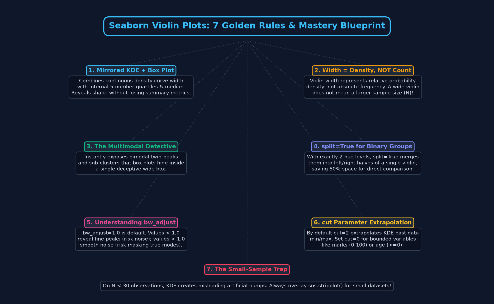
split=True binary groups ko ek hi violin ke left aur right halves mein merge karke 50% screen space bachaata hai.Agli class mein hum move karenge Categorical Aggregations par! Hum explore karenge Bar Plots (sns.barplot) aur Count Plots (sns.countplot), estimator functions, error bars (confidence intervals vs standard deviation), aur frequency counts.